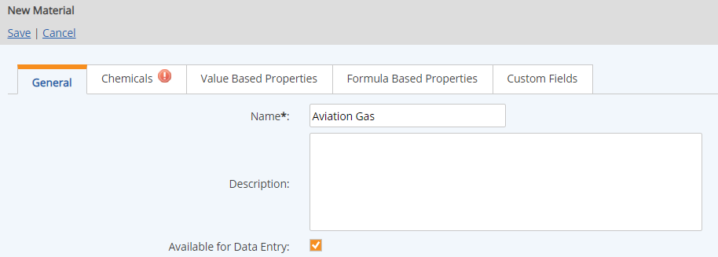
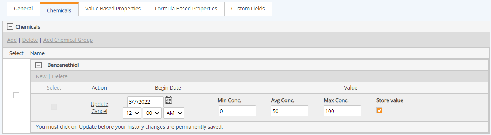

Select a Material Template, if desired, and click Continue.
Material Templates are simply templates containing custom fields for informational (non-calculation) purposes and are optional. See Material/Activity Templates.

A material must have at least one chemical. If full speciation calculations are not required, a generic chemical may be created to represent the total material composition in order to satisfy this requirement.
A Max value is required. The Avg will automatically be calculated as the difference between the Min and Max divided by 2, unless a specific value is entered. You may enter a specific value for the Avg (must be greater than 1) to override the automatic calculation. For absolute concentration values, set the Avg concentration to the same value as the Max. No validation is done to ensure chemical concentration values add up to 100%, so the use of the concentration values is flexible.
The Begin Date cannot be earlier than the Begin Date for the chemical, which for standard chemicals is 1/1/2005.


You may add one or more of the following property types:
- Value Based Properties: After adding a Value Based Property, define its value: Expand the history, click New, enter a value and Begin Date, and click Update.
- Formula Based Properties: Formula Based properties may be added on the Formula Based Properties tab, in the appropriate section according to the property type: Primary, Secondary or Tertiary.
- Formula Based Properties Primary: When you add a Primary FBP, a validation is performed to determine that all the factors necessary for its calculation are present on the material. Primary FBPs may use chemical properties and value based properties in their calculations. The calculation is performed when the material is saved. If the validation is successful, it will show TRUE. If not, it shows FALSE and the missing factors needed for its calculation are shown in red in the formula. You must add the missing elements before the material can be saved.
- Formula Based Properties Secondary: When you add a Secondary FBP, a validation is performed to determine that all the factors are available. If the validation is successful, it will show TRUE. If not, it shows FALSE and the missing factors needed for its calculation are shown in red in the formula.
- Formula Based Properties Tertiary: Validation is performed in the same manner as with a Secondary FBP. You must add any missing factors (i.e., value-based properties or other formula-based properties used in the calculation) so that all formula validations are TRUE before saving the material.
Not all factors referenced by Secondary and Tertiary FBPs can be validated at this time, as they may reference location-dependent factors (tagged requirements, calculation template values and meteorological fields) or Activity specific use variables. Only the material properties used in the formula are validated at this point. Secondary and Tertiary FBPs are validated at the time that a Material Activity Calculated Requirement is created. Secondary FBPs are calculated when the MAC is created. Tertiary FBPs are calculated on data entry. - Custom Fields: The Custom Fields tab will show the custom fields from a Material/Activity Template associated with the material on creation. If none was associated on creation of the material, you can apply one from the context menu in Materials Manager.